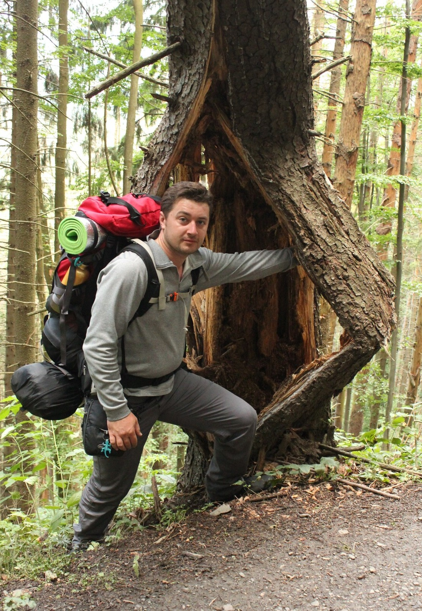
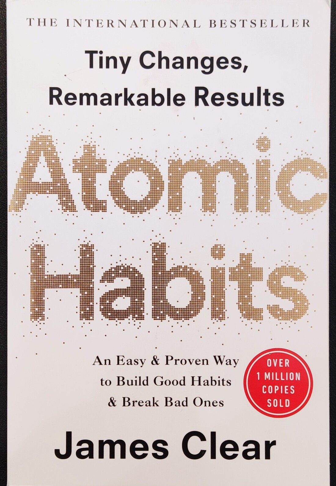
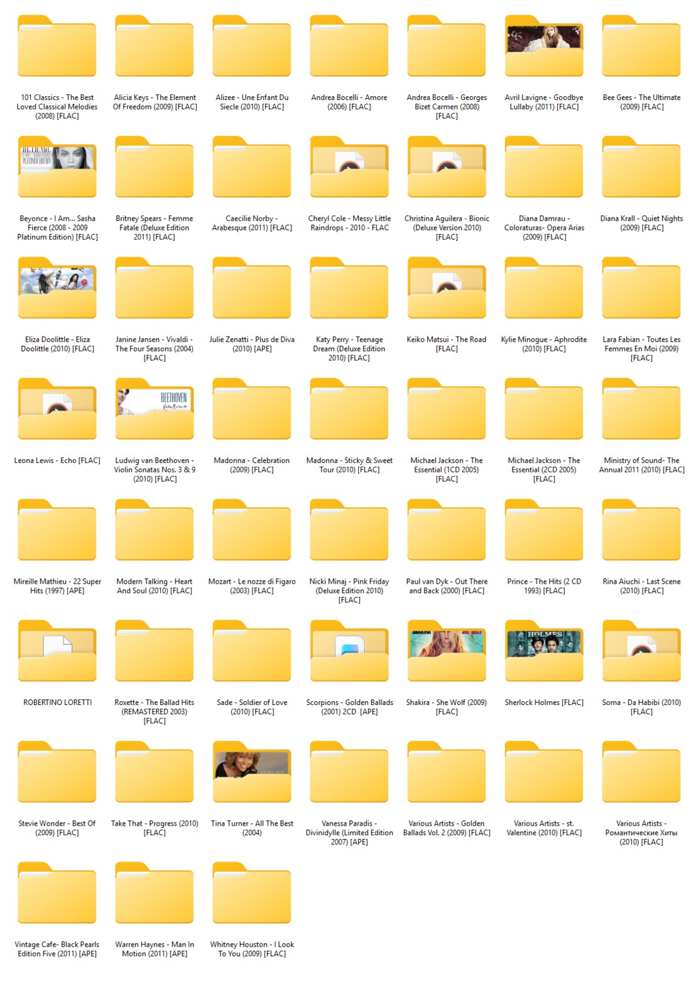
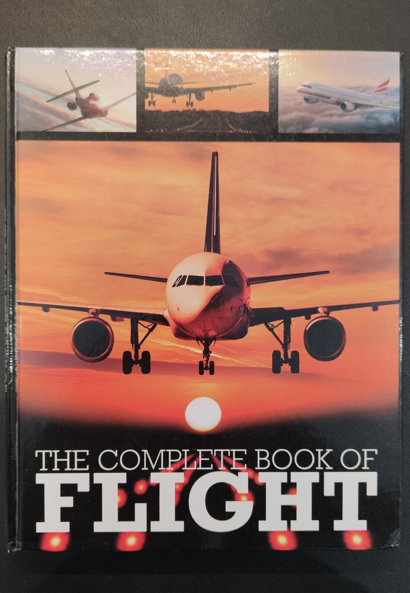

My Interests

Hiking
Hiking is for me a way to discover the beauty of Ireland and enjoy nature in its purest form. One of my favorite places is Cliffs of Moher, where you can walk along the dramatic cliffs and feel the power of the Atlantic Ocean.
Another inspiring destination is Killarney National Park with its scenic lakes and green hills. I also enjoy the Wicklow Mountains, which are perfect for peaceful walks and day hikes. Each route offers unique views and new experiences.
Hiking helps me disconnect from daily routines and restore inner balance. It is a chance to be alone with nature and my thoughts. I appreciate the variety of trails, from easy paths to more challenging climbs. These trips improve my physical fitness and endurance. Hiking has become an important part of my active lifestyle.
Read more...Reading
Reading holds a special place in my life and helps me grow continuously. Among self-development books, I especially enjoyed Atomic Habits, which teaches how to build good habits. I also find the book “Effective Combination” interesting, as it explores approaches to personal effectiveness.
Fiction allows me to better understand human nature and history. I enjoy reading works by Charles Dickens, known for deep stories and vivid characters. The detective stories of Arthur Conan Doyle are equally engaging and full of mystery and logic. The science fiction of H. G. Wells opens up new worlds and ideas.
Reading develops critical thinking and broadens my perspective. It helps me find inspiration and set new goals. Books remain a valuable source of knowledge and enjoyment for me.
Read more...

Music
Music accompanies me every day and helps create the right mood. I enjoy listening to different genres, from classical to modern electronic music. High-quality sound is especially important to me, as it allows me to hear every detail of a composition.
I have a small collection of high-quality music that I continue to expand. It includes both high-resolution digital recordings and carefully selected albums. Music helps me focus during work and relax in my free time.
Sometimes I discover new artists and styles. Each piece of music can evoke different emotions and associations. I appreciate the depth and atmosphere that music creates. This passion has become an important part of my daily life.
Read more...Aviation
Aviation has always fascinated me and inspired a sense of wonder. I am drawn to the combination of technology, precision, and freedom that flying offers. I started learning the basics of piloting and aircraft control. Gradually, this interest turned into serious training.
My goal is to obtain a Private Pilot License (PPL). During my training, I study flight theory, navigation, and meteorology. Practical lessons help me gain real experience in controlling an aircraft.
Each flight brings new skills and confidence. Aviation requires discipline and attention to detail, which makes it even more engaging. This passion opens new horizons and opportunities for travel.
Read more...